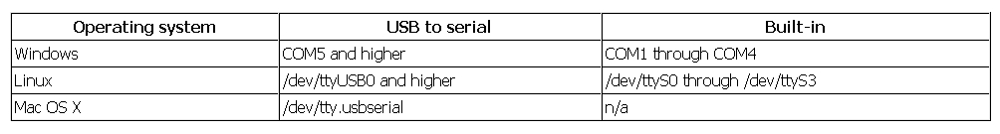

The GNU DataExplorer is a tool to gather, view and analyze data which comes from devices with a serial data port or other like CSV-file or USB port. The application itself runs on several operating system with 32 or 64 bit processor (GNU/Linux, Windows, Mac OS) and is enabled for national language support. Actual English and German is packaged. Devices might be data logger, measurement devices, charging devices or similar.
A fundamental idea for the development is the system comprehensive thought. For none Windows user the same functionality should be made available as it is today by using LogView for Windows. This is the reason to base the implementation on Java using the free available RXTXcomm library, for the serial communication and the eclipse SWT library for the graphical user interface. For both libraries a native interface for Windows, GNU/Linux and Mac OS is available. For development the eclipse IDE (integrated development environment) together with the Java 6 runtime is used.
What is the naming for serial interfaces on different operating systems: 
In fundamental there are two reasons. The software follows the freedom of software idea. Using GPL will makes the source code available for every one. Therefore the GNU DataExplorer makes all interfaces for device communication and the data model is freely available. This will finally gives everybody the power to enhance the applications (for own needs) with new functionality, add new devices and fix errors. The device specific components are separate modules and are bind dynamically during runtime (plug-in). This enables developer to develop the device plug-ins disconnected from the main application. There is a sample implementation which can be used as entry point. To implement a device plug-in three facets are touched: the device itself, knowledge how to use the device and a communication specification (of course programming knowledge).
A Java applications lives within extra for it started "Virtual Machine" (VM), this runtime environment is as fist approximation equal for all different system platforms. Therefore a Java application can be executed everywhere, where a Java runtime exist. The VM provides the available memory. Different to an application written in C a Java application can only use the memory provided by the JVM what is different to the system wide provided memory. This means while starting the JVM for an Java application the memory consumption limits must be provide (-Xms/-Xmx). If no values are provided, a maximum value of 128 Mbyte is used as default. A VM sounds like a system sandbox where there is no possibility to break through barriers. Would this the truth, there would probably no serial communication and no graphics library. Prior to announcement of the just in time compilers (JIT) Java applications are slow and came with its own visualization skin. Actual Java applications are very close to applications written in other programming languages in viewpoint of comfort and speed. Using the "Java Native Interface" it is possible to communicate direct with hardware device drivers. In this area mostly C applications are used to execute this job. This is the case with RXTXcomm and as well SWT. Using Java a very big number of freely available libraries are available as well as libraries provided by GPL license. All of his can be used in commercial applications as well.